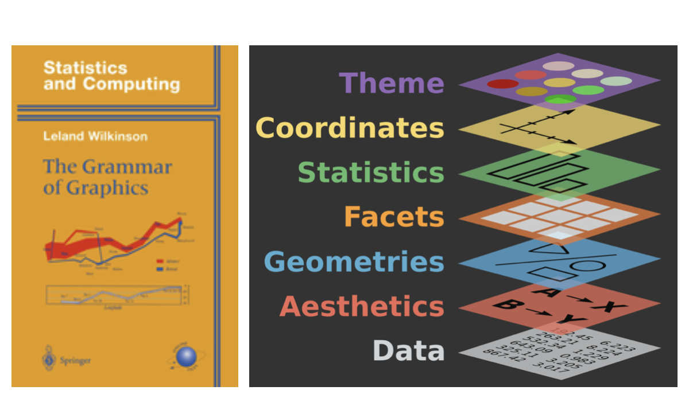
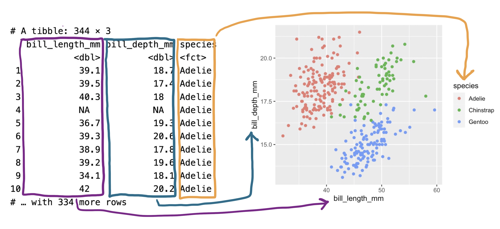

Data Visualization
The Grammar of Graphics with ggplot2
![]()
2025-01-23
Introduction
“The simple graph has brought more information to the data analyst’s mind than any other device.” — John Tukey
R has several systems for making graphs, but ggplot2 is one of the most elegant and most versatile.
ggplot2 implements the grammar of graphics, a coherent system for describing and building graphs. With ggplot2, you can do more and faster by learning one system and applying it in many places.
In this tutorial, we will create this plot:
The Grammar of Graphics
In 1999, a statistician named Leland Wilkinson published the first edition of what has been the most influential work in data visualization, The Grammar of Graphics.
The most complete implementation of the grammar is found in an R package called ggplot2 by Hadley Wickham.

The Grammar of Graphics
A plot can be decomposed into three primary elements
1. the data
2. the aesthetic mapping of the variables in the data to visual cues
3. the geometry used to encode the observations on the plot.
Getting Started
Throughout this lecture, we will be writing code together inside this webpage.
Hints:
You can type code into the cells and run them by clicking the “Run” button.
Getting Started
Packages
We begin by loading the tidyverse and ggplot2 packages.
We almost always begin our work by loading the tidyverse package. Note that the terms “package” and “library” are used interchangeably but that there is no package() function. To load a package, you need to use library().
Getting Started
Loading the Data
Load the palmerpenguins package using library().
This package contains the penguins dataset, which we will use for this tutorial.
Getting Started
Getting help
If you are unsure about how to use a function, you can use the ? operator to get help.
For a data package like palmerpenguins, you can use ?penguins to get help on the dataset.
The Grammar of Graphics
The Data
- A variable is a quantity, quality, or property that you can measure.
- A value is the state of a variable when you measure it. The value of a variable may change from measurement to measurement.
- An observation is a set of measurements made under similar conditions. An observation will contain several values, each associated with a different variable. We’ll sometimes refer to an observation as a data point.
- Tabular data is a set of values, each associated with a variable and an observation. Tabular data is tidy if each value is placed in its own “cell”, each variable in its own column, and each observation in its own row.
The Grammar of Graphics
The Data
species: a penguin’s species (Adelie, Chinstrap, or Gentoo).flipper_length_mm: length of a penguin’s flipper, in millimeters.body_mass_g: body mass of a penguin, in grams.
Formulating our Research Question(s)
- Do penguins with longer flippers weigh more or less than penguins with shorter flippers? You probably already have an answer, but try to make your answer precise.
- What does the relationship between flipper length and body mass look like? Is it positive? Negative? Linear? Nonlinear?
- Does the relationship vary by the species of the penguin? How about by the island where the penguin lives?
Building up a plot
Creating a ggplot
With ggplot2, you begin a plot with the function ggplot(), defining a plot object that you then add layers to.
The first argument of ggplot() is the dataset to use in the graph and so ggplot(data = penguins) creates an empty graph that is primed to display the penguins data, but since we haven’t told it how to visualize it yet, for now it’s empty.
Tip
Building up a plot
This is not a very exciting plot, but you can think of it like an empty canvas you’ll paint the remaining layers of your plot onto.
Next, we need to tell ggplot() how the information from our data will be visually represented. The mapping argument of the ggplot() function defines how variables in your dataset are mapped to visual properties (aesthetics) of your plot.
For now, we will only map flipper length to the x aesthetic and body mass to the y aesthetic.
The Grammar of Graphics
Aesthetics
Building up a plot
Aesthetic mappings
The mapping argument is always defined in the aes() function, and the x and y arguments of aes() specify which variables to map to the x and y axes.
For now, we will only map flipper length to the x aesthetic and body mass to the y aesthetic. ggplot2 looks for the mapped variables in the data argument, in this case, penguins.
Tip
Building up a plot
Adding layers
We need to define a geom: the geometrical object that a plot uses to represent data. These geometric objects are made available in ggplot2 with functions that start with geom_.
People often describe plots by the type of geom that the plot uses:
- bar charts use bar geoms (
geom_bar()), - line charts use line geoms (
geom_line()), - boxplots use boxplot geoms (
geom_boxplot()), - scatterplots use point geoms (
geom_point()), and so on.
The function geom_point() adds a layer of points to your plot, which creates a scatterplot.
Building up a plot
Add a scatter point layer to the plot:
Tip
Building up a plot
Adding aesthetics
It’s always a good idea to be skeptical of any apparent relationship between two variables and ask if there may be other variables that explain or change the nature of this apparent relationship.
For example, does the relationship between flipper length and body mass differ by species?
When exploring relationships between variables, it’s important to consider other variables that might affect the relationship. Let’s incorporate species into our plot using color:
Tip
Building up a plot
Add a trend line to see the relationship more clearly using geom_smooth()
Tip
Add a trendline (geom_smooth(method = "lm")) layer to the plot.
Building up a plot
Adding smooth curves
It’s important to recognise how the color aesthetic is inherited by both geoms, creating separate trend lines for each species.
Building up a plot
Adding smooth curves
It’s important to recognise how the color aesthetic is inherited by both geoms, creating separate trend lines for each species.
Building up a plot
Adding smooth curves
It’s important to recognise how the color aesthetic is inherited by both geoms, creating separate trend lines for each species.
ggplot(
data = penguins,
mapping = aes(x = flipper_length_mm, y = body_mass_g,
color = species)
) +
geom_point() +
geom_smooth(method = "lm", <color = species>)Pay attention to how the aesthetic mappings propagate through the layers of the plot.
This can be useful for creating complex plots with multiple layers, but it can also lead to unexpected results if you’re not careful.
Building up a plot
Global vs Local aesthetics
In the previous plot, the color aesthetic was defined in the global mapping. This means that it applies to all geoms in the plot.
To get a single trend line while keeping colored points, we move the color aesthetic to geom_point():
Tip
Building up a plot
Other aesthetics - shapes
In addition to color, we can also map out variables to other aesthetic elements.
Here, we map species to the shape aesthetic.
Tip
Building up a plot
Final touches
The data portions of our plot are now complete. But data visualization is not just about the data – it’s also about the visual elements that make the plot accessible and informative.
We also need the plot itself to communicate:
- What the plot is about (title)
- What the axes represent, including units (labels)
- What the colors and shapes represent (legends)
- Additional context such as the source of the data (subtitle or caption)
Building up a plot
We can now add this information to our plot
Tip
Some notes on ggplot() calls
So far, we’ve written the code in a very explicit way, with each argument named. This is a good practice when you’re learning, but it can be a bit verbose.
Typically, the first one or two arguments to a function are so important that you should know them by heart. The first two arguments to ggplot() are data and mapping.
You’ll often see them left out. This is true for other functions as well.
When leaving the names out, the order of the arguments matters.
Some notes on ggplot() calls
In the future, you’ll also learn about the pipe, |>, which operates similarly to the + operator in ggplot2.
It lets you chain together a series of operations, passing the output of one function to the input of the next.
Some notes on ggplot() calls
In the future, you’ll also learn about the pipe, |>, which operates similarly to the + operator in ggplot2.
It lets you chain together a series of operations, passing the output of one function to the input of the next.
Don’t worry if you don’t understand this yet. It’s just a sneak peek at what’s to come.
Summary
The basic idea that underpins ggplot2: a visualization is a mapping from variables in your data to aesthetic properties like position, color, size and shape.
- The grammar of graphics provides a systematic way to build visualizations
- Start with data and aesthetic mappings
- Add layers with geoms
- Use different geoms for different types of variables
- Enhance plots with labels, colors, and facets
- Make sure your plots are clear and honest
That’s it!
With our remaining time, I’d like you to practice with ggplot2 using the DataAnalytics exercise. You should have already installed DataAnalytics with:
You can then run the following code to get started:
Continuous Module Dialogue
Menti Survey
Visualizing distributions
The following are some additional slides on dealing with other data types and visualizing distributions in ggplot2. Explore them at your own pace.
Visualizing distributions
Categorical variables
For categorical variables like species, we use bar charts:
Visualizing distributions
Numerical variables
For numerical variables like body_mass_g, we use histograms:
Visualizing distributions
Exploring binwidth
The choice of binwidth affects what patterns we can see:
Visualizing distributions
Density plots
An alternative to histograms is the density plot:
Visualizing relationships
Numerical and categorical variables
To compare a numerical variable across categories, use boxplots:
Visualizing relationships
Alternative views
We can also use density plots to compare distributions:
Visualizing relationships
Two categorical variables
For two categorical variables, use stacked bar plots:
Visualizing relationships
Three or more variables
Use facets to split plots by a categorical variable: